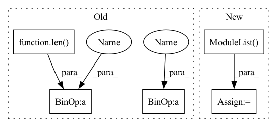

Pattern ID :9552
Before Change
coupling_inverse = list(coupling_inverse) if coupling_inverse else [None]
self.stem = torch.nn.Sequential(*[m if isinstance(m, ReversibleModule) else
ReversibleModule(m,
coupling_forward[i % len( coupling_forward) ],
coupling_inverse[i % len(coupling_inverse)])
for i, m in enumerate(modules)])
self.split_dim = split_dim
After Change
coupling_inverse: typing.Optional[typing.List[typing.Optional[typing.Callable]]] = None):
super(ReversibleSequential, self).__init__()
self.split_dim = split_dim
self.module_list = torch.nn.ModuleList( modules)
self.coupling_forward = list(coupling_forward) if coupling_forward else [additive_coupling_forward]
self.coupling_inverse = list(coupling_inverse) if coupling_inverse else [additive_coupling_inverse]
self.cpu_state: torch.Tensor = torch.get_rng_state()In pattern: SUPERPATTERN
Frequency: 3
Non-data size: 5
Instances Fragment ID: 34188952
Project Name: homebrewnlp/revlib
Commit Name: cf30076bdb714b10ae99eb3cfcb7ff02f3aff974
Time: 2021-08-22
Author: 39779310+ClashLuke@users.noreply.github.com
File Name: revlib/__init__.py
M Class Name: ReversibleSequential
N Class Name: ReversibleSequential
M Method Name: __init__(1)
N Method Name: __init__(1)
M Parent Class: torch.nn.Module
N Parent Class: torch.nn.Module
M File Name: revlib/__init__.py
N File Name: revlib/__init__.py
M Start Line: 82
M End Line: 89
N Start Line: 19
N End Line: 33
Before Change
coupling_inverse = list(coupling_inverse) if coupling_inverse else [None]
self.stem = torch.nn.Sequential(*[m if isinstance(m, ReversibleModule) else
ReversibleModule(m,
coupling_forward[i % len( coupling_forward) ],
coupling_inverse[i % len(coupling_inverse)])
for i , m in enumerate(modules)])
self.split_dim = split_dim
def forward(self, inp: torch.Tensor) -> torch.Tensor:After Change
coupling_inverse: typing.Optional[typing.List[typing.Optional[typing.Callable]]] = None):
super(ReversibleSequential, self).__init__()
self.split_dim = split_dim
self.module_list = torch.nn.ModuleList( modules)
self.coupling_forward = list(coupling_forward) if coupling_forward else [additive_coupling_forward]
self.coupling_inverse = list(coupling_inverse) if coupling_inverse else [additive_coupling_inverse]
self.cpu_state: torch.Tensor = torch.get_rng_state() Fragment ID: 34188947
Project Name: clashluke/revlib
Commit Name: cf30076bdb714b10ae99eb3cfcb7ff02f3aff974
Time: 2021-08-22
Author: 39779310+ClashLuke@users.noreply.github.com
File Name: revlib/__init__.py
M Class Name: ReversibleSequential
N Class Name: ReversibleSequential
M Method Name: __init__(1)
N Method Name: __init__(1)
M Parent Class: torch.nn.Module
N Parent Class: torch.nn.Module
M File Name: revlib/__init__.py
N File Name: revlib/__init__.py
M Start Line: 82
M End Line: 89
N Start Line: 19
N End Line: 33
Before Change
super(HEADS, self).__init__()
self.nc = nc // number of classes
self.no = nc + 5 // number of outputs per anchor
self.nl = len(anchors) // number of detection layers
self.na = len( anchors[0]) * self.nl // number of anchors
self.naxs = len(anchors[0])
self.grid = [torch.empty(1)] * self.nl // init grid
self.anchor_grid = [torch.empty(1)] * self.nl // init anchor grid
// https://pytorch.org/docs/stable/generated/torch.nn.Module.html command+f register_bufferAfter Change
anchors_ = torch.tensor(anchors).float().view(self.nl, -1, 2) / torch.tensor(self.stride).repeat(6, 1).T.reshape(3, 3, 2)
self.register_buffer("anchors", anchors_) // shape(nl,na,2)
self.out_convs = nn.ModuleList()
for in_channels in ch:
self.out_convs += [
nn.Conv2d(in_channels=in_channels, out_channels=(5+self.nc) * self.naxs, kernel_size=1)
]
Fragment ID: 34188951
Project Name: alessandromondin/yolov5m
Commit Name: cb9b9fe4530bd72066881a1c742e4267308dc41e
Time: 2022-12-18
Author: alessandromondin00@gmail.com
File Name: model.py
M Class Name: HEADS
N Class Name: HEADS
M Method Name: __init__(4)
N Method Name: __init__(5)
M Parent Class: nn.Module
N Parent Class: nn.Module
M File Name: model.py
N File Name: model.py
M Start Line: 146
M End Line: 164
N Start Line: 159
N End Line: 165